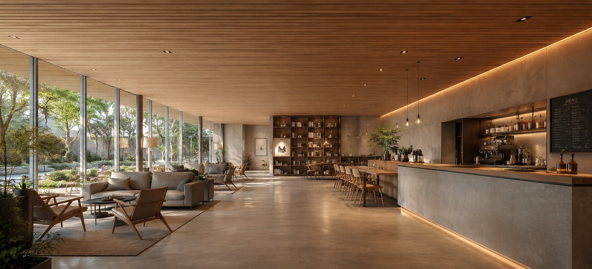
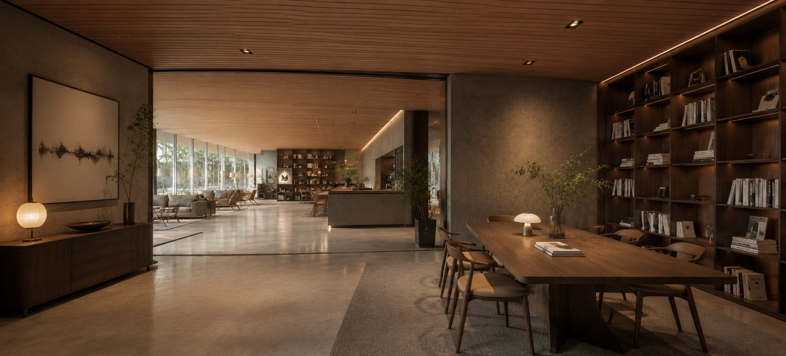

コンセプト
ここはFVの下に続くダミーセクションです。FVの内観はスワイプ(ドラッグ)した分だけ視点が動きます。画像の端まで動かして、さらに同じ方向へスワイプすると、次の空間へ進むように切り替わります。逆方向に端まで戻れば前の空間へ。テキストやロゴは実際のサイトの内容に差し替えてください。


緑を眺めて過ごす、まちのラウンジ。
ここはFVの下に続くダミーセクションです。FVの内観はスワイプ(ドラッグ)した分だけ視点が動きます。画像の端まで動かして、さらに同じ方向へスワイプすると、次の空間へ進むように切り替わります。逆方向に端まで戻れば前の空間へ。テキストやロゴは実際のサイトの内容に差し替えてください。